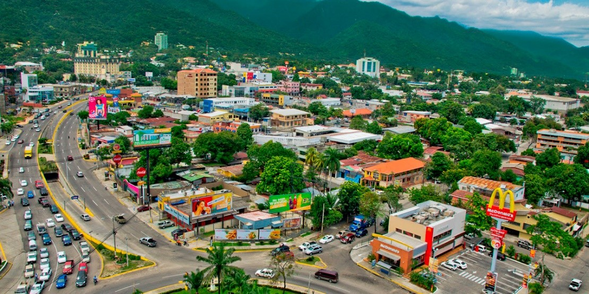
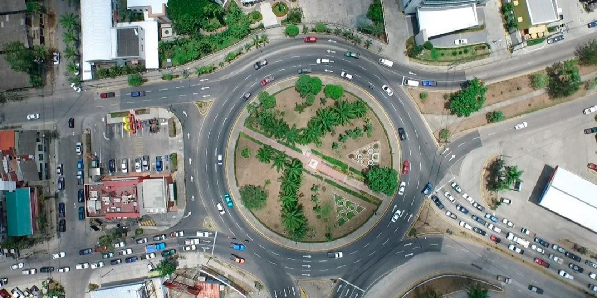

 San Pedro Sula es una ciudad de la República de Honduras, capital administrativa del departamento de Cortés y una de las ciudades más grandes de Centroamérica y la segunda ciudad en población detrás del las ciudades gemelas de Tegucigalpa y Comayagüela. Entre otras muestras de su importancia, la ciudad es sede de las empresas industriales más importantes del país, por lo que también es conocida como la capital industrial del país. Esta ciudad se encuentra flanqueada por la Sierra del Omoa, y está ubicada en el extremo suroeste del extenso y fértil Valle de Sula, una región que genera aproximadamente el 62 por ciento del producto interno bruto (PIB) y el 68 % de las exportaciones de la nación además es la única ciudad no capital de todo Centroamérica con importancia estratégica e industrial.
 San Pedro Sula fue fundada el 27 de junio de 1536, bajo el nombre de San Pedro de Puerto Caballos por el conquistador español Pedro de Alvarado. Inicialmente, la villa se estableció en el pueblo indígena de Choloma, al norte de la actual ciudad y muy próxima a Puerto Cortés.6 Debido a esta proximidad con este puerto, la villa de San Pedro, fue víctima de ataques y saqueos por parte de piratas europeos que desembarcaban en ese puerto.7 Por esta razón, las autoridades españolas se vieron forzadas a reubicar la villa en más de una oportunidad.
Por más de dos siglos desde su fundación, el crecimiento demográfico de San Pedro Sula fue bastante lento. En la actualidad, San Pedro Sula es la ciudad con la más alta tasa de crecimiento poblacional de Honduras,8 El desarrollo económico alcanzado a raíz de la llegada de las transnacionales bananeras a principios del siglo XX, y el posterior establecimiento de parques industriales (ZIP) en el valle de Sula impulsó en gran medida el aumento poblacional de San Pedro Sula.9
San Pedro Sula, asentado en las tierras bajas, tiene a menudo un clima agobiante.10 Este puede llegar a ser extremadamente caliente y húmedo.11 La temporada seca, o verano en San Pedro Sula se extiende desde diciembre hasta el mes de abril. Los meses de marzo y abril son los meses más calurosos y secos de la ciudad. La temporada lluviosa o invierno de San Pedro Sula se extiende desde el mes de mayo hasta noviembre, lo cual ayuda a enfriar un poco la temperatura. Los meses de agosto son generalmente los meses más húmedos.